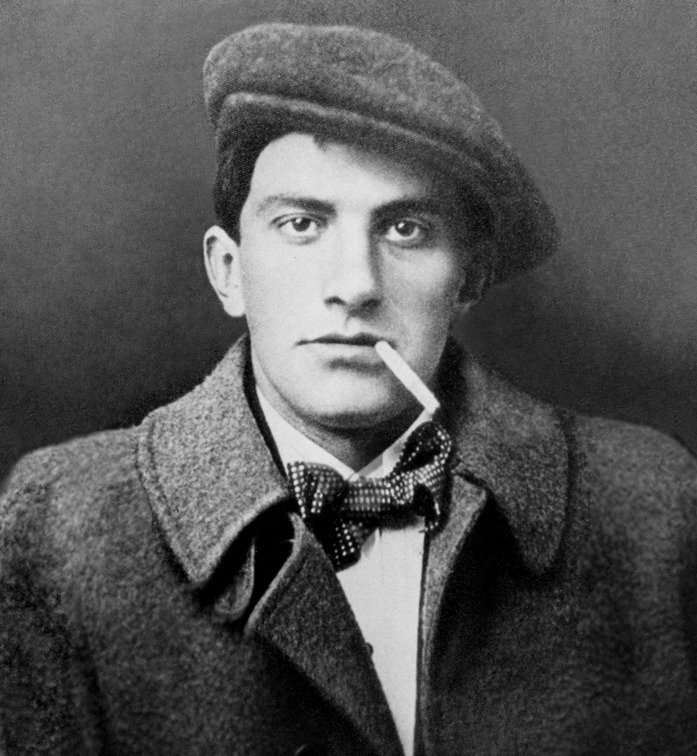

Творчество
В 1912 г. в альманахе футуристов «Пощечина общественному вкусу» выходят первые стихотворения Маяковского. Одновременно в этом же номере был помещен манифест, подписанный В. Маяковским, В. Хлебниковым, Е. Крученых и Д. Бурлюком, в котором заявлялось о разрыве с традициями русских классиков, о необходимости создания нового языка и новой литературы, которые соответствовали бы эпохе.
Поэтический язык Маяковского характеризуется использованием традиционно «высокой» лексики с просторечиями. В противовес красивостям эгофутуриста И. Северянина, Маяковский и кубофутуристы культивируют деэстетизацию, грубость, которые, по их мнению, помогают художнику «перейти от творчества произведений искусства к творчеству самой жизни» и выводят искусство за привычные границы.
